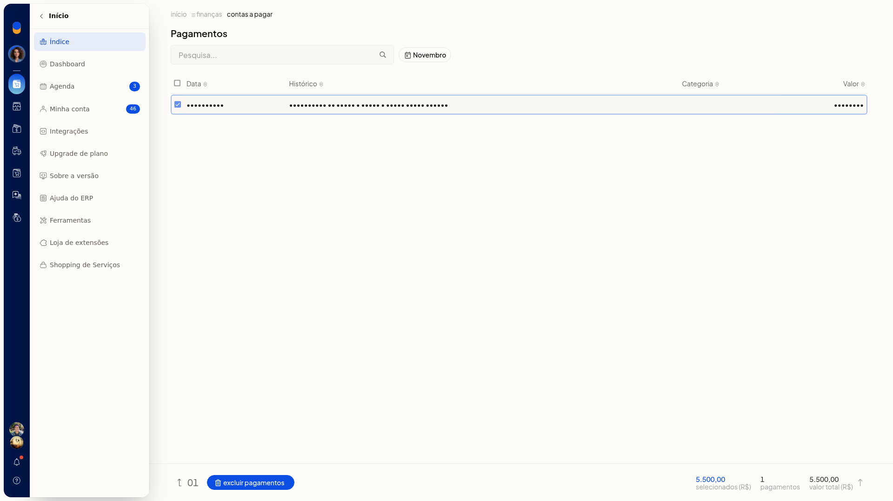

Consultar a origem da baixa no Caixa
No Caixa do ERP da Olist, a baixa de uma conta a receber ou a pagar aparece como um lançamento da conta financeira. Você reconhece esse lançamento pelo histórico e pelo vínculo de Origem. Não há coluna de Status nessa consulta.
Pelo controle de Origem, você abre o recebimento ou o pagamento que gerou o lançamento. Esse lançamento não se corrige no Caixa: a edição fica desabilitada porque ele vem de um recebimento ou de um pagamento.
Pré-requisitos
- A baixa já precisa existir como lançamento na conta financeira do Caixa. Nesta tela não há como dar baixa em conta a receber ou a pagar.
Importante
- Não há coluna de Status no lançamento de baixa nem nas listas de Recebimentos e Pagamentos abertas pela origem.
- Para abrir o recebimento ou o pagamento, use o controle de Origem do lançamento. Não use a trilha do topo da página como caminho.
- Lançamento vindo de recebimento ou pagamento não pode ser alterado. A ficha informa: Edição desabilitada. Este lançamento não pode ser alterado pois vem de um recebimento ou pagamento.
Instruções
-
Acesse Finanças > Caixa.
-
Na conta financeira, localize o lançamento de baixa pelo histórico. O histórico pode indicar baixa de conta vencida ou liquidação de conta a pagar.
-
Abra o menu da linha do lançamento. As opções são Editar, Imprimir recibo, Alterar conta e Marcadores. Não há ação de Status.

-
Clique em Editar.
-
Confira a mensagem de edição desabilitada. A ficha traz as abas Dados do lançamento, Competência, Anexos e Marcadores. Clique em Voltar para retornar à lista, sem alterar nem salvar.

-
No lançamento cujo histórico indica baixa de conta a receber, clique no controle de Origem, o ícone com a letra B. A lista Recebimentos mostra o recebimento relacionado, com as colunas Data, Histórico, Categoria e Valor.
-
Em Mais ações, veja Imprimir relatório e Exportar recebimentos para planilha. Se quiser apenas consultar, não imprima nem exporte.
-
Marque a caixa de seleção para ver a quantidade selecionada e Excluir recebimentos. O rodapé mostra o valor selecionado, a quantidade de recebimentos e o valor total. Não confirme a exclusão. A consulta do recebimento que gerou o lançamento termina aqui.

-
No lançamento cujo histórico indica liquidação de conta a pagar, clique no controle de Origem. A lista Pagamentos mostra o pagamento relacionado, com as colunas Data, Histórico, Categoria e Valor, além de pesquisa, seletor de mês, Imprimir e Mais ações.

-
Clique em Mais ações e veja Imprimir relatório e Exportar pagamentos para planilha. Se quiser apenas consultar, não imprima nem exporte.

- Marque a caixa de seleção para ver a quantidade e Excluir pagamentos. O rodapé mostra o valor selecionado, a quantidade de pagamentos e o valor total. Não confirme a exclusão. Você consulta o pagamento que gerou o lançamento de caixa.

Resultado
O lançamento de baixa permanece no Caixa, com histórico de baixa ou liquidação e o controle de Origem. A origem abre Recebimentos ou Pagamentos com o registro correspondente, sem coluna de Status.
Informações adicionais
- Nessas listas de origem não há opção de importar planilha nem de ativar integração para consultar ou lançar a baixa.
- Mais ações reúne Imprimir relatório e a exportação para planilha: Exportar recebimentos para planilha ou Exportar pagamentos para planilha, conforme a lista.